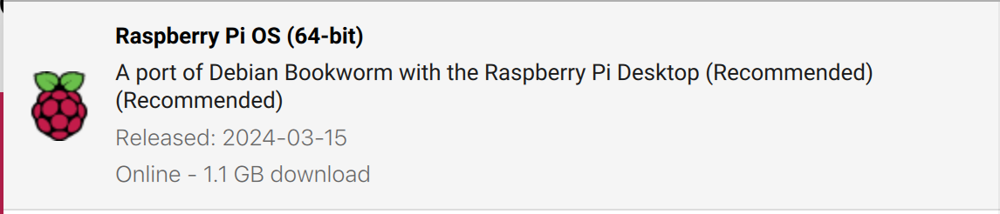

RPI-4 con RPi OS 64 bookworm
Las siguientes instrucciones suponen que se ha instalado Raspberry Pi OS 64-bit en su versión Bookworm 2024-03-15.

Y que se emplea la siguiente versión del LSI_Lab1_old.tgz.
1. Diferencias en la gestión de la cámara
libcamera
La cámara ya no se gestiona del mismo modo, ahora se hace por medio de la libcamera.
Para más información sobre los módulos de cámara de la Raspberry Pi y el software asociado consultar el siguiente enlace (mejor no buscar en Google porque la mayor parte de la información está obsoleta).
Asociado a este nuevo interfaz se proporcionan nuevas herramientas de línea de comandos como libcamera-hello, libcamera-still, etc. que son útiles para comprobar el correcto funcionamiento de la cámara.
Problema de OpenCV y libcamera
Al usar la libcamera hay un problema de compatibilidad con OpenCV y la cámara de la Raspberry Pi no se puede usar directamente como dispositivo 0, es necesario usarlo a través de un pipeline de Gstreamer.
2. Gstreamer
¿Qué es?
GStreamer es un framework de código abierto para la creación, manipulación y reproducción de flujos multimedia.
Instalación Gstreamer
Es preciso instalar los siguientes paquetes (basado este enlace y actualizado para bookworm)
# install a missing dependency
$ sudo apt-get install libx264-dev libjpeg-dev
# install the remaining plugins
$ sudo apt-get install libgstreamer1.0-dev \
libgstreamer-plugins-base1.0-dev \
libgstreamer-plugins-bad1.0-dev \
gstreamer1.0-plugins-ugly \
gstreamer1.0-tools \
gstreamer1.0-gl \
gstreamer1.0-gtk3
# if you have Qt5 install this plugin
$ sudo apt-get install gstreamer1.0-qt5
# install the compatibility package
$ sudo apt-get install gstreamer1.0-libcamera
# install if you want to work with audio
$ sudo apt-get install gstreamer1.0-pulseaudio
Prueba de un pipeline básico (640x480)
$ gst-launch-1.0 libcamerasrc ! video/x-raw, width=640, height=480, framerate=30/1 ! videoconvert ! videoscale ! clockoverlay time-format="%D %H:%M:%S" ! autovideosink
3. OpenCV
Instalación de OpenCV (4.6)
Por defecto Bookworm incluye la versión 4.6, si se necesita una más reciente es preciso compilarla o buscar un binario pre-compilado.
$ sudo apt-get install libopencv-dev
$ sudo apt-get install python3-opencv
Ejemplo C++ de OpenCV empleando libcamera+gstreamer
Basado en este ejemplo para Bulleye pero retocado Bookworm:
$ git clone https://github.com/Qengineering/Libcamera-OpenCV-RPi-Bullseye-64OS
$ cd Libcamera-OpenCV-RPi-Bullseye-64OS
Modificar el fichero GStreamer_RPi_64_Bullseye.cbpdel siguiente modo:
diff --git a/GStreamer_RPi_64_Bullseye.cbp b/GStreamer_RPi_64_Bullseye.cbp
index 69b7181..0d27522 100644
--- a/GStreamer_RPi_64_Bullseye.cbp
+++ b/GStreamer_RPi_64_Bullseye.cbp
@@ -32,7 +32,7 @@
<Add option="-Wall" />
<Add option="-fexceptions" />
<Add option="-pthread" />
- <Add directory="/usr/local/include/opencv4" />
+ <Add directory="/usr/include/opencv4" />
<Add directory="/usr/include/gstreamer-1.0" />
<Add directory="/usr/lib/aarch64-linux-gnu/glib-2.0/include" />
<Add directory="/usr/include/glib-2.0" />
@@ -43,7 +43,7 @@
<Add option="-pthread" />
<Add library="/usr/lib/aarch64-linux-gnu/libgobject-2.0.so" />
<Add library="/usr/lib/aarch64-linux-gnu/libgstreamer-1.0.so" />
- <Add library="/usr/lib/aarch64-linux-gnu/libgstapp-1.0.so" />
+ <Add library="/usr/lib/aarch64-linux-gnu/libgstapp-1.0.so.0" />
<Add directory="/usr/local/lib/" />
</Linker>
<Unit filename="main.cpp" />
Para compilar este ejemplo es necesario instalar CodeBlocks, abrir el proyecto (fichero .cbp) y construirlo. Se puede ejecutar tanto desde CodeBlocks como desde línea de comando (`)
$ sudo apt-get install codeblocks
Esencialmente el código lo que hace es abrir pipeline de Gstreamer como el visto anteriormente:
std::string gstreamer_pipeline(int capture_width, int capture_height, int framerate, int display_width, int display_height) {
return
" libcamerasrc ! video/x-raw, "
" width=(int)" + std::to_string(capture_width) + ","
" height=(int)" + std::to_string(capture_height) + ","
" framerate=(fraction)" + std::to_string(framerate) +"/1 !"
" videoconvert ! videoscale !"
" video/x-raw,"
" width=(int)" + std::to_string(display_width) + ","
" height=(int)" + std::to_string(display_height) + " ! appsink";
}
//pipeline parameters
int capture_width = 640; //1280 ;
int capture_height = 480; //720 ;
int framerate = 15 ;
int display_width = 640; //1280 ;
int display_height = 480; //720 ;
// create pipeline string
std::string pipeline = gstreamer_pipeline(capture_width, capture_height, framerate,
display_width, display_height);
// open pipeline
cv::VideoCapture cap(pipeline, cv::CAP_GSTREAMER);
Este código se puede reutlizar en los laboratorios del Lab1.
Ejemplo Python de OpenCV empleando libcamera+gstreamer
Bastaría con substituir cap = cv2.VideoCapture(0)por la siguiente secuencia de código y todo debería funcionar correctamente:
pipeline = "libcamerasrc ! video/x-raw, width=(int)640, height=(int)480, framerate=(fraction)15/1 ! videoconvert ! videoscale ! video/x-raw, width=(int)640, height=(int)480 ! appsink"
cap = cv2.VideoCapture(pipeline,cv2.CAP_GSTREAMER)
Se puede probar con el ejemplo de cámara de Python del Lab1.
4. Tensorflow-Lite C++
Instalación
Lo más sencillo es buscar un binario reciente pre-compilado para Raspberry Pi OS 64 Bookworm como por ejemplo este: TF-Lite 2.16.1.
El proceso de instalación es sencillo:
$ wget https://github.com/prepkg/tensorflow-lite-raspberrypi/releases/latest/download/tensorflow-lite_64.deb
$ sudo dpkg -i tensorflow-lite_64.deb
Lab1/Classificacion/CPP
Para probar el ejemplo C++ de clasificación de imágenes del Lab1 basta con realizar las modificaciones relativas a la captura de cámara comentadas anteriormente y compilar el código con el siguiente comando en lugar del empleado originalmente:
$ cd LSI_Lab1/Clasificacion/CPP
$ g++ classification.cpp -I /usr/local/include -lpthread -ldl -ltensorflow-lite `pkg-config --cflags --libs opencv4` -o classification.x
Para probarlo, al igual que vimos en su momento hay que descargar previamente los modelos. De momento sólo la versión CPU y mejor hacerlo con los siguiente comandos:
$ cd LSI_Lab1/Clasificacion/
$ curl -O https://storage.googleapis.com/download.tensorflow.org/models/tflite/mobilenet_v1_1.0_224_quant_and_labels.zip
$ unzip mobilenet_v1_1.0_224_quant_and_labels.zip -d Modelos
$ rm mobilenet_v1_1.0_224_quant_and_labels.zip
Para ejecutar basta con los siguientes comandos:
$ cd LSI_Lab1/Clasificacion/CPP
$ ./classification.x
5. Runtime EdgeTPU
Las fuentes de libedgetpu están disponibles el GitHub de Google-Coral pero lo más sencillo es decargar binarios pre-compilados para bookworm y arm64 (también denominado aarch64).
Instrucciones de instalación:
$ wget https://github.com/feranick/libedgetpu/releases/download/16.0TF2.16.1-1/libedgetpu-dev_16.0tf2.16.1-1.bookworm_arm64.deb
$ wget https://github.com/feranick/libedgetpu/releases/download/16.0TF2.16.1-1/libedgetpu1-max_16.0tf2.16.1-1.bookworm_arm64.deb
$ sudo dpkg -i libedgetpu*
6. Diferencias en la gestión de módulos de Python
Debian Bookworm incluye por defecto Python 3.11 que exige la utilización de entornos virtuales para la gestión de módulos.
Si no se emplea un entorno virtual aparece un aviso:
$ pip3 install tensorflow
error: externally-managed-environment
× This environment is externally managed
╰─> To install Python packages system-wide, try apt install
python3-xyz, where xyz is the package you are trying to
install.
If you wish to install a non-Debian-packaged Python package,
create a virtual environment using python3 -m venv path/to/venv.
Then use path/to/venv/bin/python and path/to/venv/bin/pip. Make
sure you have python3-full installed.
For more information visit http://rptl.io/venv
note: If you believe this is a mistake, please contact your Python installation or OS distribution provider. You can override this, at the risk of breaking your Python installation or OS, by passing --break-system-packages.
Aunque no es la manera más elegante, en nuestro contexto, lo más sencillo es deshabilitar ese chequeo mediante el siguiente comando:
$ sudo mv /usr/lib/python3.11/EXTERNALLY-MANAGED /usr/lib/python3.11/EXTERNALLY-MANAGED.old
7. TF-Lite y EdgeTPU desde Python
Basta con instalar los paquetes correspondientes:
$ pip3 install tflite-runtime
Para poder usar los ejemplos del Lab1 basta con modificar la captura de cámara como hemos indicado previamente.